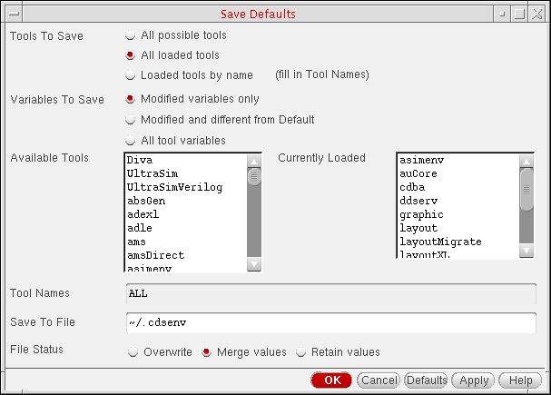

8
Saving and Recalling Default Settings
Cadence software comes with factory pre-set default settings so that you can run the software immediately. When forms appear, the default values are already set. Some buttons are already checked/unchecked, some fields already contain text, and some other choices are already set.
Cadence supplies the following sample file containing default settings:
your_install_dir/tools/dfII/samples/.cdsenv
Your system administrator customizes this file for your site and puts it in the following local environment file:
your_install_dir/tools/dfII/local/.cdsenv
You can override these site-specific settings by creating another .cdsenv file in your home or workarea directory. When the Cadence software loads, it reads your .cdsenv file after the site-specific file, so the settings in your file override the settings in files loaded earlier. These overrides apply to your system only.
.cdsinit file will take precedence over settings in your .cdsenv file if you have both files in your home or workarea directory.The following topics are discussed:
See also “Copying and Editing the Default .cdsenv File” and “Specifying a Search Order for .cdsenv”.
Specifying New Default Values
To specify and save new default values from one session to the next, do the following:
-
From the Command Interpreter Window (CIW), choose Options – Save Defaults.
The Save Defaults form appears.
 -
Select one of the following Tools To Save radio buttons to specify the environments to save:
-
All possible tools saves changed settings for all applications listed in the Available Tools list area.
The Variables To Save radio buttons become inactive. - All loaded tools (the default) saves changed settings for all applications listed in the Currently Loaded list area.
-
Loaded tools by name saves changed settings for individual applications whose names you type in the Tool Names field (such as
schematic).
The Tool Names field becomes available when you select the Loaded tools by name radio button. The default value in that field isALL(to save settings for all loaded tools).
-
All possible tools saves changed settings for all applications listed in the Available Tools list area.
-
Select one of the following Variables To Save radio buttons.
-
(Optional) In the Save To File field, change the name and location of the environment file to save.
The default is the.cdsenvfile in your home directory (~/.cdsenv). - Select one of the following File Status radio buttons:
- Click OK.
Settings are saved to the .cdsenv file and read the next time you start the software.
See also “Recalling Defaults”.
~/.cdsenv. Those applications provide a command to load the defaults. For that information, see the documentation for the application.Recalling Defaults
To load a saved default file for your design session:
Environment settings from this file are loaded for this design session.
Return to top